Praktikum 8: REST API & HTTP Request
A. Pendahuluan
Perkembangan aplikasi mobile mendorong kebutuhan akan pengelolaan data yang dinamis dan terintegrasi dengan server. Salah satu teknologi yang digunakan untuk memenuhi kebutuhan tersebut adalah REST API, yang memungkinkan aplikasi berkomunikasi dengan server melalui HTTP Request. Data yang diterima umumnya berbentuk JSON sehingga perlu diolah dan dikonversi ke dalam model data agar dapat digunakan oleh aplikasi. Pada Flutter, proses komunikasi dengan API dapat dilakukan menggunakan package http, sedangkan pengelolaan proses asinkron dapat memanfaatkan Future, async/await, dan FutureBuilder untuk menangani proses pemuatan data, menampilkan hasil, serta mengelola kondisi kesalahan.
Pada praktikum Modul 8, konsep tersebut diterapkan pada aplikasi ResepKu yang sebelumnya menggunakan data resep dummy yang ditulis langsung di dalam kode. Aplikasi dikembangkan agar dapat mengambil data resep dari API https://dummyjson.com/recipes melalui metode GET, menambahkan resep menggunakan POST, serta melakukan pencarian, pembaruan, dan penghapusan data melalui endpoint yang tersedia. Selain itu, aplikasi dilengkapi dengan penanganan kondisi loading dan error agar proses pengambilan data dapat ditampilkan dengan baik kepada pengguna. Melalui praktikum ini, mahasiswa mempelajari penerapan HTTP Request, pengolahan respons JSON, serta integrasi data dari server ke dalam aplikasi mobile berbasis Flutter.
B. Tujuan
Tujuan dari praktikum ini adalah:
- Memahami struktur respons JSON dari REST API serta membuat factory fromJson untuk mengonversi data JSON menjadi model Recipe.
- Mampu melakukan HTTP Request menggunakan metode GET dengan package http melalui sebuah class service.
- Mampu menampilkan data API menggunakan FutureBuilder dengan menerapkan loading state, error state, tombol coba lagi, dan fitur pull-to-refresh.
- Mampu mengirimkan data resep baru ke server menggunakan metode POST melalui form serta menangani respons yang diterima.
C. Isi
Praktikum
1. Membuat Model Recipe
File: models/recipe.dart
Model Recipe digunakan untuk menampung data resep yang diterima dari API. Data JSON diubah menjadi objek Dart melalui fungsi fromJson().
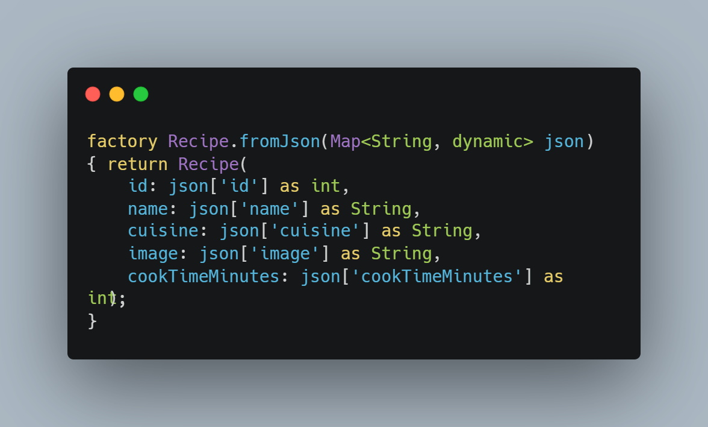
Penjelasan: Fungsi tersebut mengambil nilai dari JSON dan memasukkannya ke dalam objek Recipe. Dengan demikian, data dari API dapat digunakan oleh halaman aplikasi dalam bentuk objek Dart.
2. Membuat RecipeService
File: services/recipe_service.dart
RecipeService dibuat untuk mengatur komunikasi antara aplikasi dan API. Pada bagian ini ditentukan alamat API, HTTP Client, dan batas waktu permintaan.
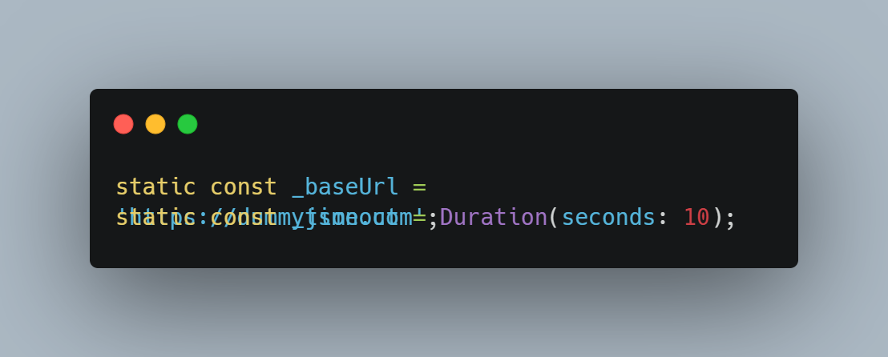
Selanjutnya, dibuat fungsi fetchRecipes() untuk mengambil daftar resep menggunakan metode GET.
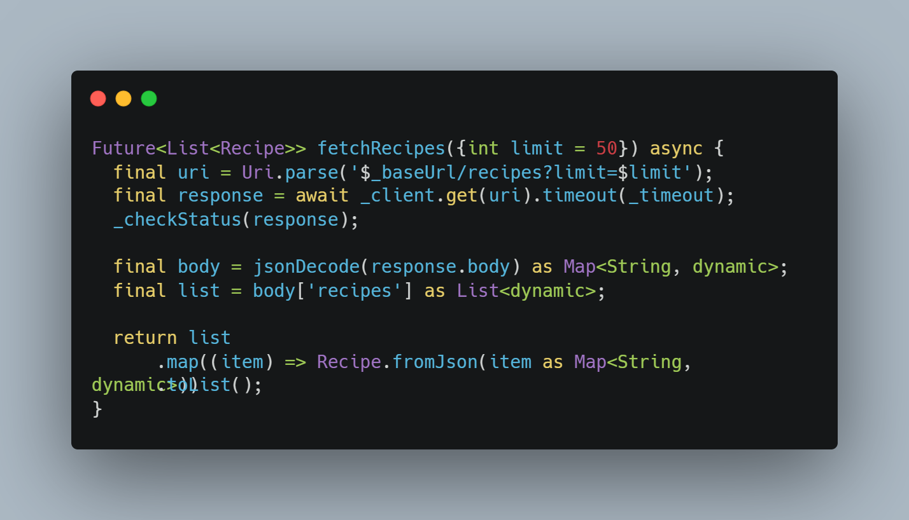
Penjelasan: Fungsi tersebut mengirim permintaan GET, membaca respons JSON, kemudian mengubah setiap data resep menjadi objek Recipe.
3. Menambahkan Fungsi POST
Masih pada file services/recipe_service.dart, dibuat fungsi addRecipe() untuk mengirim data resep baru ke API.
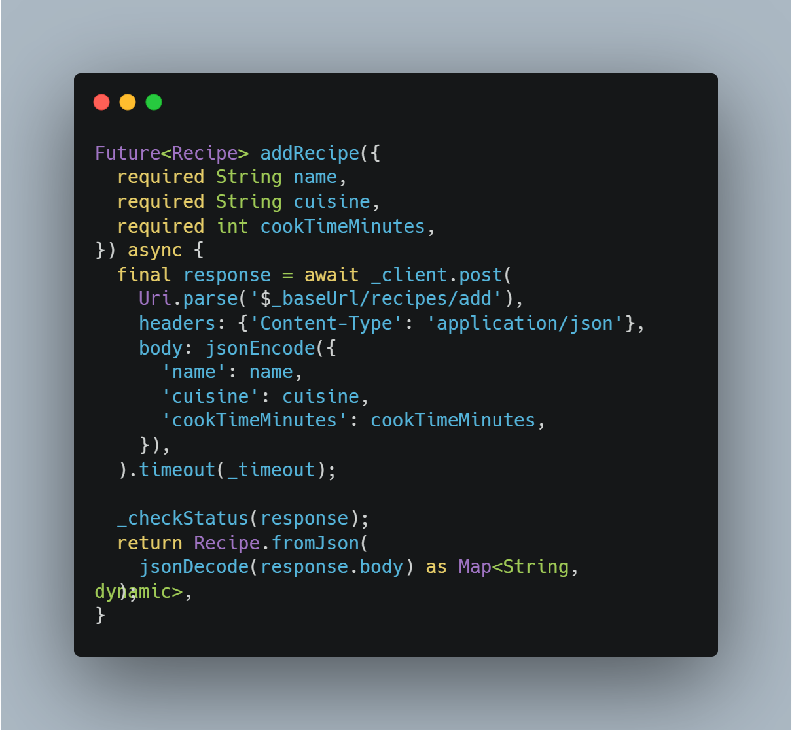
Penjelasan: Fungsi ini mengirim nama resep, jenis masakan, dan waktu memasak dalam format JSON. Respons dari server kemudian diubah kembali menjadi objek Recipe.
4. Menyiapkan Halaman Utama
File: pages/home_page.dart
Pada halaman utama, data resep dimuat ketika halaman pertama kali dibuka. Future disimpan pada variabel _recipesFuture.
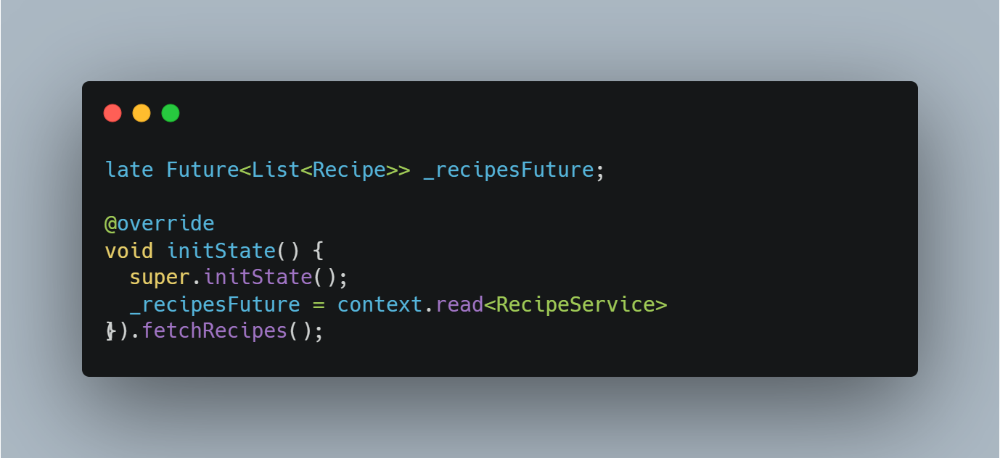
Penjelasan: Penyimpanan Future dilakukan di initState() agar permintaan API tidak dibuat berulang kali setiap kali fungsi build() dijalankan.
5. Menampilkan Data dengan FutureBuilder
Data dari API ditampilkan menggunakan FutureBuilder. Komponen ini menangani kondisi ketika data sedang dimuat, terjadi kesalahan, atau data berhasil diterima.
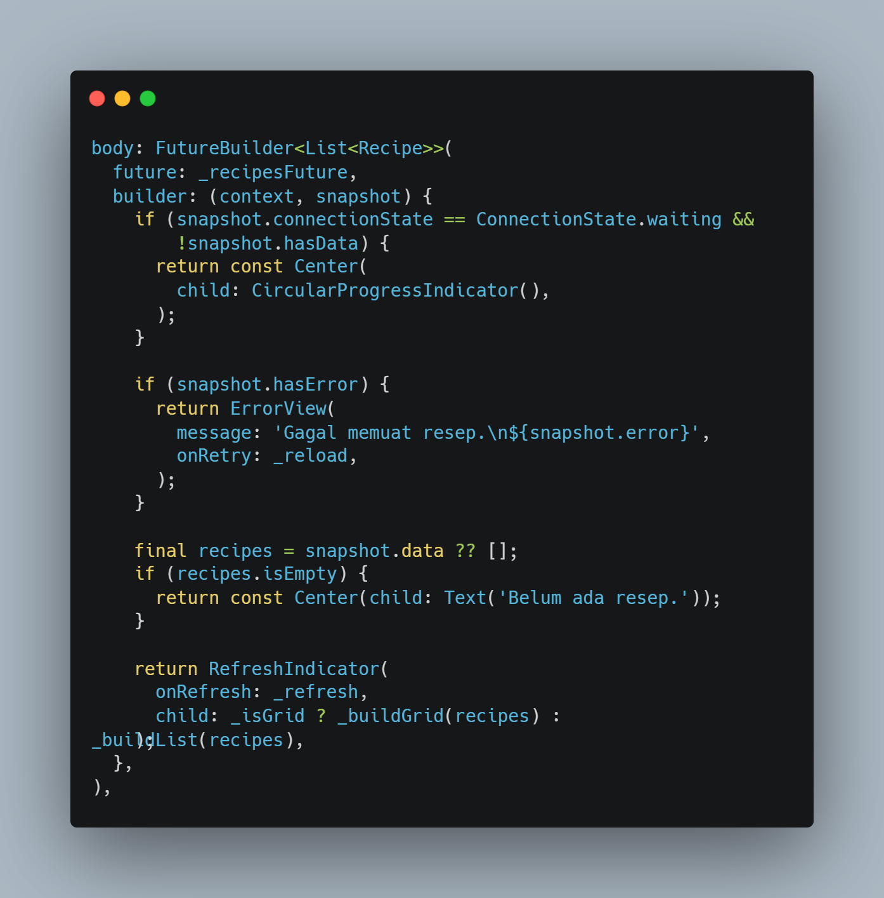
Penjelasan: Jika data sedang dimuat, aplikasi menampilkan indikator loading. Jika terjadi kesalahan, aplikasi menampilkan pesan error. Jika data tersedia, daftar resep ditampilkan dalam bentuk list atau grid.
6. Membuat Fitur Refresh
Fungsi _reload() digunakan untuk membuat permintaan GET baru, sedangkan _refresh() digunakan ketika pengguna menarik daftar resep ke bawah.
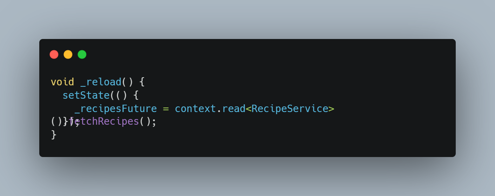
Penjelasan: Fitur ini memungkinkan pengguna memuat ulang data tanpa harus menutup dan membuka aplikasi kembali.
7. Membuat Form Tambah Resep
File: pages/add_recipe_page.dart
Halaman tambah resep menyediakan formulir untuk memasukkan nama resep, jenis masakan, dan waktu memasak. Sebelum data dikirim, formulir diperiksa menggunakan fungsi validasi.
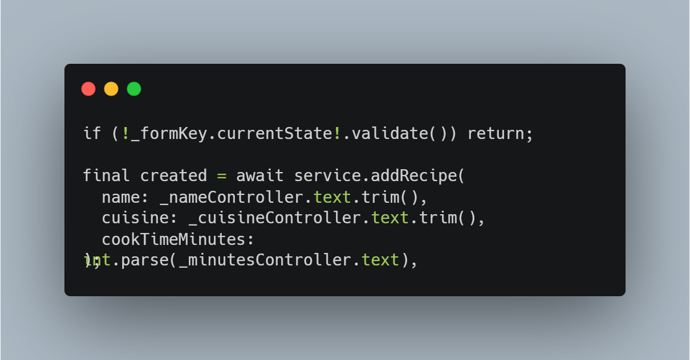
Penjelasan: Jika data valid, aplikasi memanggil fungsi addRecipe() untuk mengirim data menggunakan metode POST. Setelah berhasil, halaman mengembalikan data resep yang diterima dari server.
Checkpoint 1
Indikator loading:
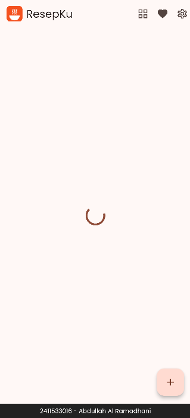
Home dengan resep dari server (perlihatkan resep yang tidak ada di 6 resep dummy):
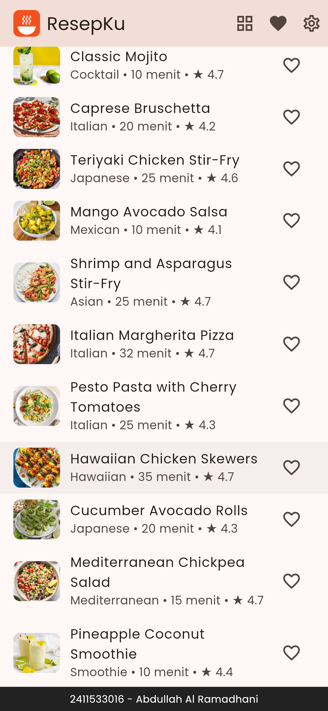
Halaman Detail yang menampilkan bagian Langkah:
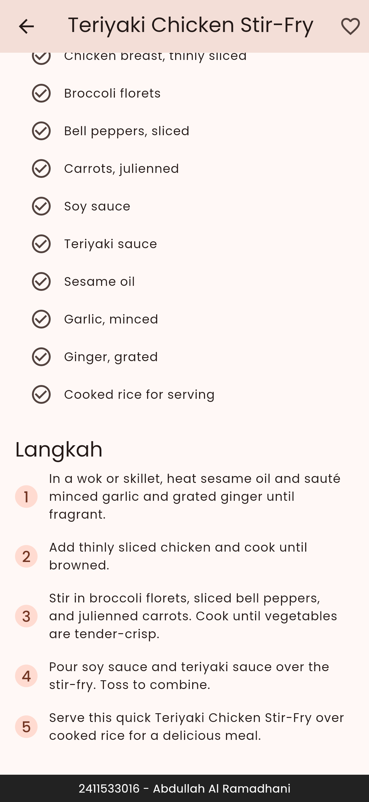
Checkpoint 2
ErrorView saat mode pesawat aktif:
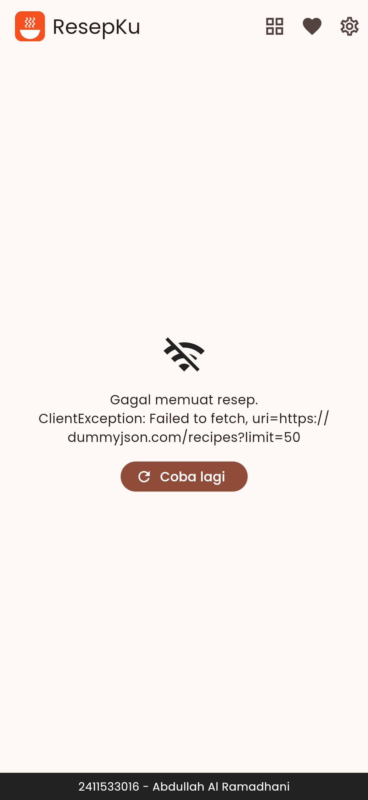
Pull-to-refresh yang sedang berjalan:
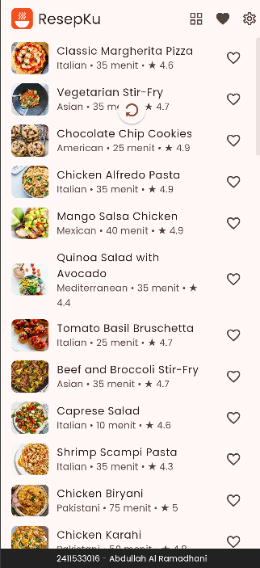
Checkpoint 3
Tekan tombol +, lalu tekan Simpan dengan form kosong. Pesan "Wajib diisi" harus muncul dan tidak ada request yang dikirim:
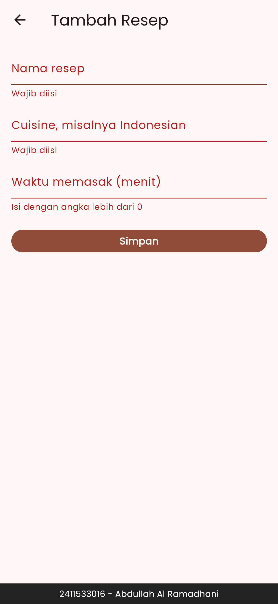
Isi nama Rendang, cuisine Indonesian, dan waktu 180, lalu tekan Simpan. Form tertutup dan SnackBar menampilkan id yang diberikan server:
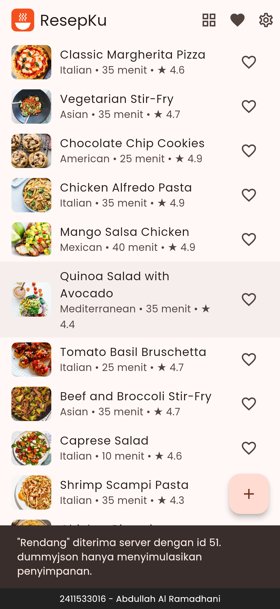
Tarik daftar untuk refresh. Rendang tidak muncul, karena dummyjson hanya menyimulasikan penyimpanan:

D. Pengujian
| No | Skenario | Hasil yang diharapkan | Sesuai? |
|---|---|---|---|
| 1 | Buka aplikasi | Indikator loading, lalu 50 resep dari server | ✓ |
| 2 | Tandai dua resep sebagai favorit, lalu tarik untuk refresh | Ikon hati kedua resep tetap merah dan badge tetap 2 | ✓ |
| 3 | Tekan tombol grid, lalu kembali ke list | Tidak ada indikator loading baru | ✓ |
| 4 | Buka detail salah satu resep | Foto, porsi, bahan, dan langkah memasak tampil | ✓ |
| 5 | Mode pesawat, lalu hot restart | ErrorView dengan tombol "Coba lagi" | ✓ |
| 6 | Matikan mode pesawat, tekan "Coba lagi" | Daftar resep tampil kembali | ✓ |
| 7 | Kirim resep baru melalui tombol + | SnackBar berisi id dari server | ✓ |
Pertanyaan Analisis
1. Pada skenario 2, setiap refresh membuat objek Recipe yang baru dari JSON. Mengapa status favorit tetap benar? Hubungkan dengan cara FavoriteProvider membandingkan resep (Modul 6).
Jawab:
Status favorit tetap bertahan setelah refresh karena FavoriteProvider tidak menyimpan keseluruhan referensi objek Recipe di memori, melainkan hanya menyimpan daftar ID resep (id) yang unik untuk setiap item. Saat proses refresh menghasilkan instance objek Recipe baru hasil parsing JSON, nilai id setiap resep dari server tetap sama sehingga pengecekan isFavorite(recipe) berdasarkan ID tetap mengembalikan nilai true dan mempertahankan warna merah ikon hati beserta jumlah pada badge.
2. Pada skenario 3, mengapa menekan tombol grid tidak memunculkan indikator loading? Apa yang akan terjadi jika future ditulis langsung di dalam build()?
Jawab:
Menekan tombol grid tidak memunculkan indikator loading karena tombol pergantian tampilan list dan grid hanya mengubah nilai variabel boolean _isGrid di dalam setState, sedangkan objek _recipesFuture diinisialisasi satu kali di dalam method initState() sehingga instance Future yang dipakai FutureBuilder tidak berubah saat layar di-render ulang. Apabila pemanggilan fetchRecipes() ditulis langsung di dalam method build(), setiap perubahan state seperti menekan tombol grid akan memicu request HTTP baru ke server dan menampilkan indikator loading secara berulang kali.
3. HomePage tidak memanggil http.get secara langsung, melainkan melalui RecipeService. Sebutkan dua keuntungan cara ini.
Jawab:
Memisahkan logika komunikasi jaringan ke dalam class RecipeService membuat kode antarmuka (UI) di HomePage tetap bersih dan terpisah dari detail teknis seperti URL endpoint, pengaturan timeout, maupun proses decoding JSON. Selain itu, arsitektur ini memudahkan pemeliharaan serta pengujian unit (unit testing) karena http.Client dapat diganti dengan MockClient tanpa harus mengubah kode pada lapisan tampilan.
4. Setelah POST berhasil, server memberi id baru, tetapi resep tidak muncul saat daftar dimuat ulang. Jelaskan penyebabnya, dan bagaimana aplikasi dengan server sungguhan biasanya menampilkan data yang baru ditambahkan.
Jawab:
Resep baru yang dikirimkan melalui endpoint /recipes/add tidak muncul saat daftar dimuat ulang karena dummyjson.com merupakan REST API publik untuk latihan yang hanya menyimulasikan operasi penulisan data tanpa benar-benar menyimpannya ke dalam basis data permanen. Pada aplikasi dengan server produksi yang sungguhan, data yang baru ditambahkan umumnya ditampilkan dengan cara memanggil ulang endpoint GET setelah navigasi form ditutup atau menyisipkan langsung objek resep hasil respons POST ke dalam daftar state lokal di layar.
5. Di AddRecipePage terdapat if (!mounted) return; setelah await. Jelaskan skenario yang dicegah oleh baris tersebut.
Jawab:
Baris if (!mounted) return; berfungsi mencegah terjadinya runtime error akibat pemanggilan Navigator.pop atau ScaffoldMessenger menggunakan BuildContext milik widget yang sudah tidak aktif di dalam widget tree. Skenario ini terjadi ketika pengguna menekan tombol kembali untuk menutup halaman AddRecipePage sebelum proses request HTTP addRecipe yang ditunggu oleh await selesai merespons dari server.
E. Latihan
Latihan 1: Fitur Search
1. Menambahkan Fungsi Search pada RecipeService
File: services/recipe_service.dart
Fungsi searchRecipes() digunakan untuk mencari resep berdasarkan kata kunci yang dimasukkan pengguna.
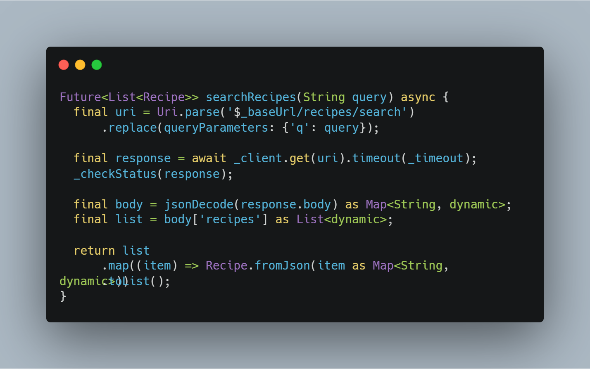
Penjelasan: Fungsi tersebut mengirim permintaan GET ke endpoint pencarian dengan parameter q. Hasil pencarian kemudian diubah menjadi daftar objek Recipe.
2. Membuat Halaman Search
File: pages/search_page.dart
Halaman pencarian menggunakan TextEditingController untuk membaca kata kunci yang dimasukkan pengguna. Ketika pengguna menekan Enter, fungsi _search() dijalankan.
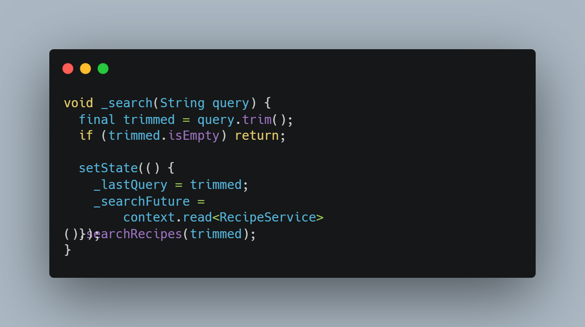
Penjelasan: Kata kunci dibersihkan menggunakan trim(). Jika tidak kosong, aplikasi memanggil fungsi searchRecipes() dan menyimpan hasilnya dalam _searchFuture.
3. Menampilkan Hasil Pencarian
Hasil pencarian ditampilkan menggunakan FutureBuilder. Aplikasi menampilkan indikator loading ketika permintaan berlangsung, pesan error jika terjadi kegagalan, dan daftar resep jika data berhasil diterima.
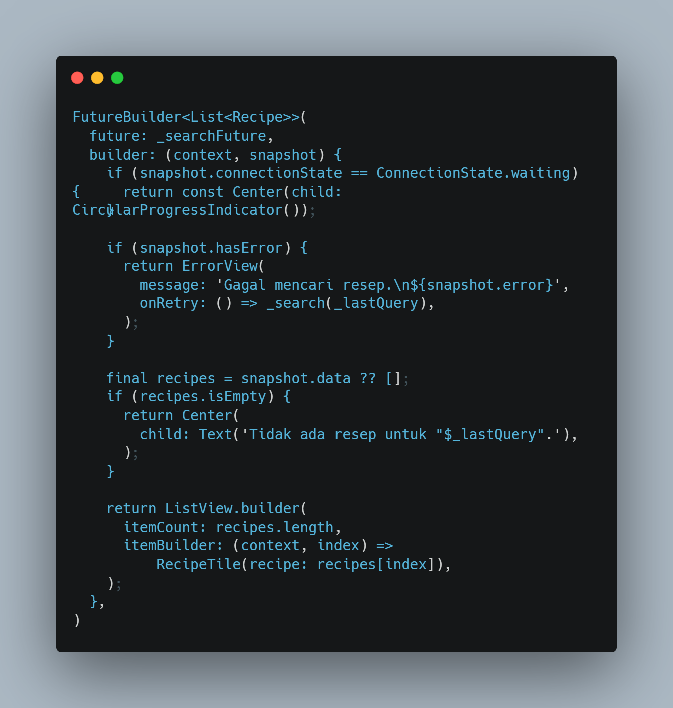
Penjelasan: Dengan fitur ini, pengguna dapat mencari resep berdasarkan kata kunci dan melihat hasilnya secara langsung pada halaman pencarian.
4. Menghubungkan Halaman Search dengan HomePage
File: pages/home_page.dart
Pada halaman utama ditambahkan tombol pencarian yang mengarahkan pengguna ke SearchPage.
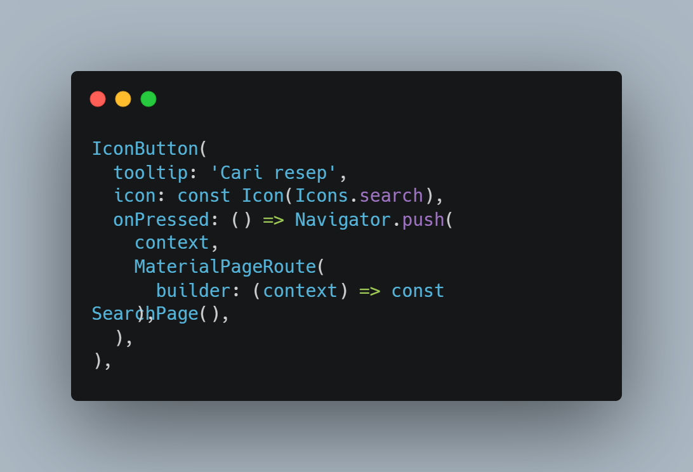
Hasil Latihan 1
Hasil pencarian muncul (misalnya mencari kata kunci pasta):
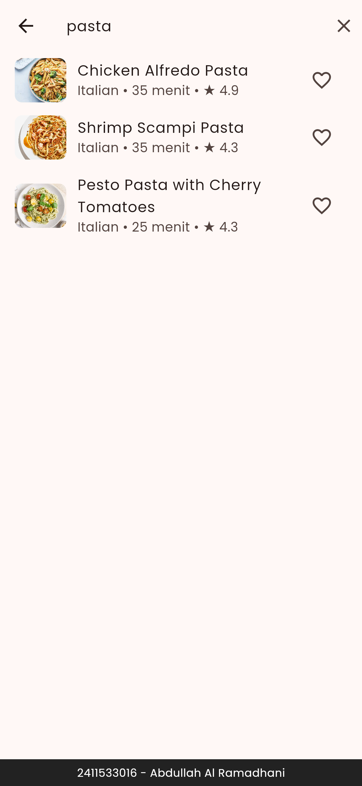
Hasil pencarian kosong (misalnya mencari kata kunci acak seperti xyz123):
Latihan 2: Fitur Update dan Delete
1. Menambahkan Fungsi Update pada RecipeService
File: services/recipe_service.dart
Fungsi updateRecipe() digunakan untuk mengubah nama resep berdasarkan ID resep.
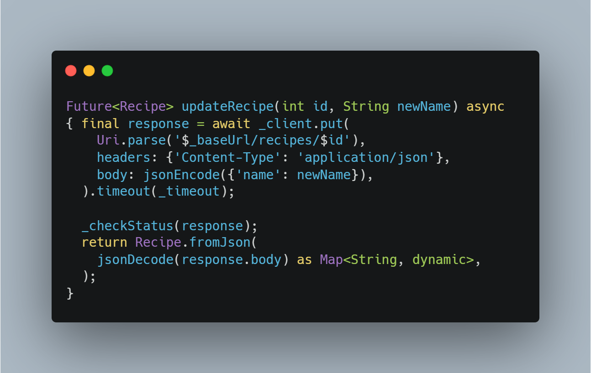
Penjelasan: Fungsi ini mengirim permintaan PUT ke endpoint resep berdasarkan ID. Nama baru dikirim dalam format JSON, kemudian respons server diubah menjadi objek Recipe.
2. Menambahkan Fungsi Delete pada RecipeService
Masih pada file services/recipe_service.dart, fungsi deleteRecipe() digunakan untuk menghapus resep berdasarkan ID.
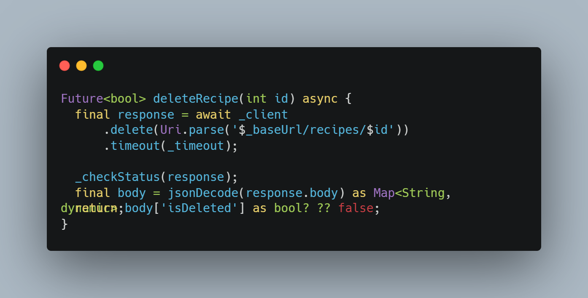
Penjelasan: Fungsi tersebut mengirim permintaan DELETE. Setelah menerima respons, aplikasi membaca nilai isDeleted untuk mengetahui apakah server menyatakan proses penghapusan berhasil.
3. Membuat Dialog Ubah Nama Resep
File: pages/detail_page.dart
Pada halaman detail resep ditambahkan fungsi _showEditDialog(). Fungsi ini menampilkan dialog agar pengguna dapat memasukkan nama resep yang baru.
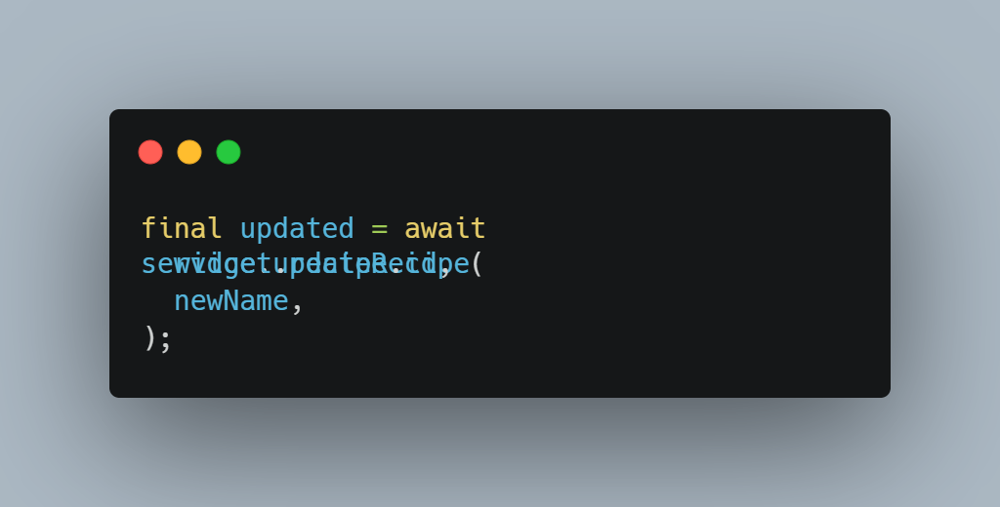
Penjelasan: Setelah pengguna menekan tombol Simpan, aplikasi memanggil fungsi updateRecipe(). Jika permintaan berhasil, aplikasi menampilkan pesan melalui SnackBar. Jika terjadi kesalahan, aplikasi menampilkan pesan kegagalan.
4. Membuat Dialog Konfirmasi Hapus
Masih pada file pages/detail_page.dart, fungsi _showDeleteDialog() digunakan untuk meminta konfirmasi sebelum menghapus resep.
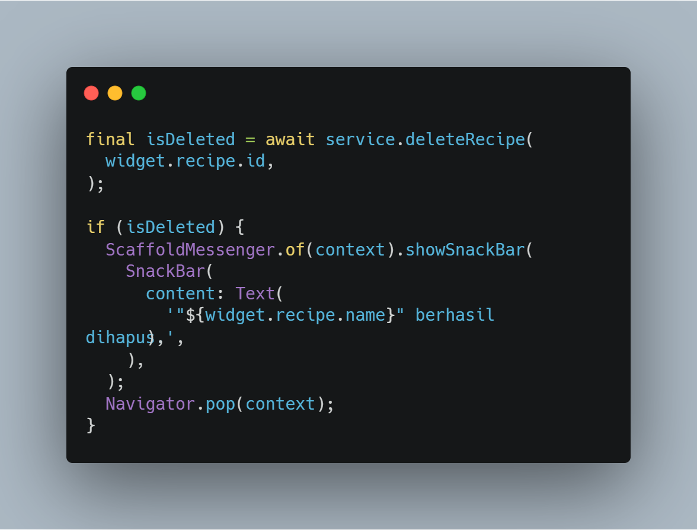
Penjelasan: Jika server memberikan nilai isDeleted bernilai benar, aplikasi menampilkan pemberitahuan bahwa resep berhasil dihapus dan kembali ke halaman sebelumnya.
5. Menambahkan Menu Ubah dan Hapus
Pada AppBar halaman detail, ditambahkan PopupMenuButton yang menyediakan pilihan Ubah nama dan Hapus.
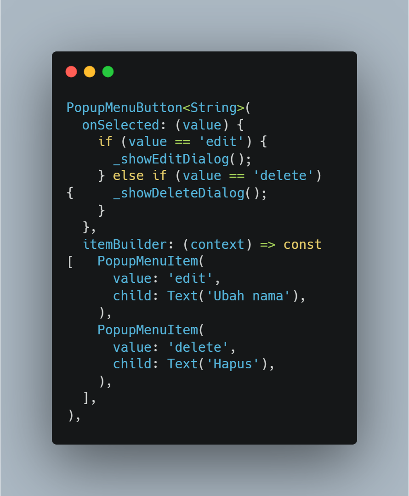
Hasil Latihan 2
Dialog Ubah Nama Resep terbuka:
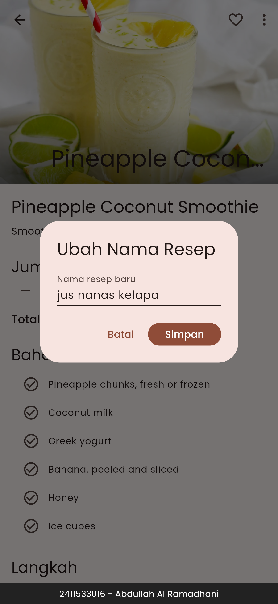
SnackBar nama baru setelah tombol Simpan ditekan:
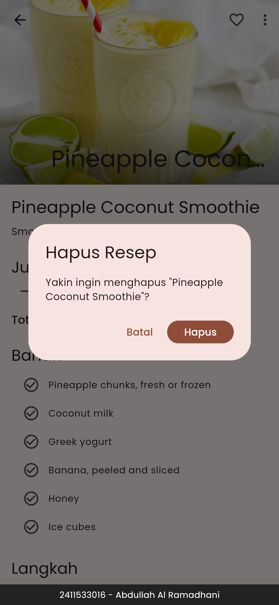
Dialog konfirmasi Hapus Resep terbuka, serta SnackBar konfirmasi penghapusan setelah kembali ke halaman Home:
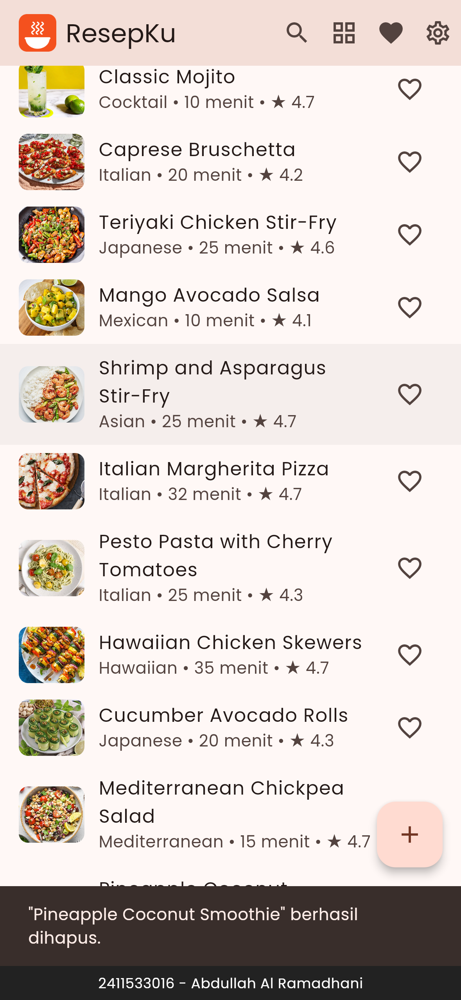
Latihan 3: Unit Testing
1. Membuat File test/recipe_service_test.dart
Buat file baru di dalam folder test/ bernama recipe_service_test.dart untuk melakukan pengujian unit pada RecipeService menggunakan MockClient.
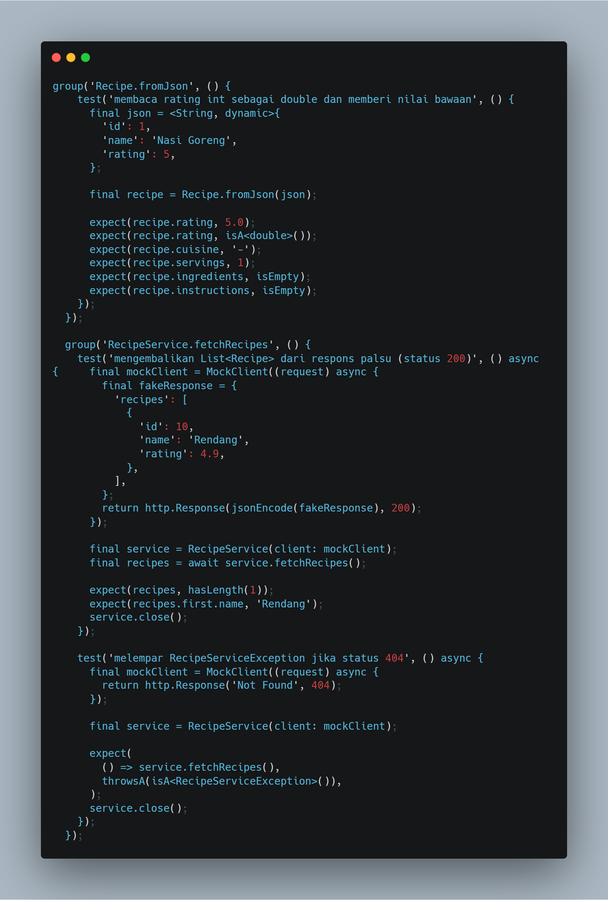
2. Menjalankan Pengujian
Buka terminal di VS Code pada direktori root project resepku, lalu jalankan perintah berikut:
flutter test test/recipe_service_test.dart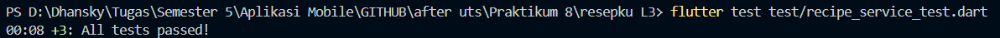
F. Kesimpulan
Pada praktikum ini, aplikasi ResepKu berhasil diintegrasikan dengan REST API dari dummyjson.com untuk menggantikan data statis menjadi data dinamis langsung dari server. Proses pengambilan data dilakukan melalui pemisahan lapisan komunikasi jaringan ke dalam class RecipeService menggunakan package http serta konversi struktur JSON ke objek Dart melalui factory constructor Recipe.fromJson. Seluruh siklus operasi CRUD mulai dari menampilkan daftar resep (GET), pencarian kata kunci, hingga penambahan (POST), pembaruan (PUT), dan penghapusan data (DELETE) dapat berjalan bersama widget FutureBuilder untuk menangani tampilan indikator loading, pesan error beserta tombol coba lagi, maupun fitur pull-to-refresh.
Selain integrasi jaringan, praktikum ini juga menunjukkan pentingnya menjaga stabilitas tampilan dan konsistensi data pada pemrograman asinkron di Flutter. Penggunaan inisialisasi Future di dalam initState(), validasi input pada formulir pengiriman data, serta pengecekan properti mounted setelah proses await terbukti mencegah pemanggilan request berulang dan menghindari error ketika halaman ditutup sebelum respons server tiba. Di sisi lain, pengujian fungsional maupun unit test menggunakan MockClient memastikan bahwa status favorit berbasis ID tetap terjaga setelah pembaruan data dan logika layanan API dapat diuji secara terpisah tanpa bergantung pada koneksi internet.